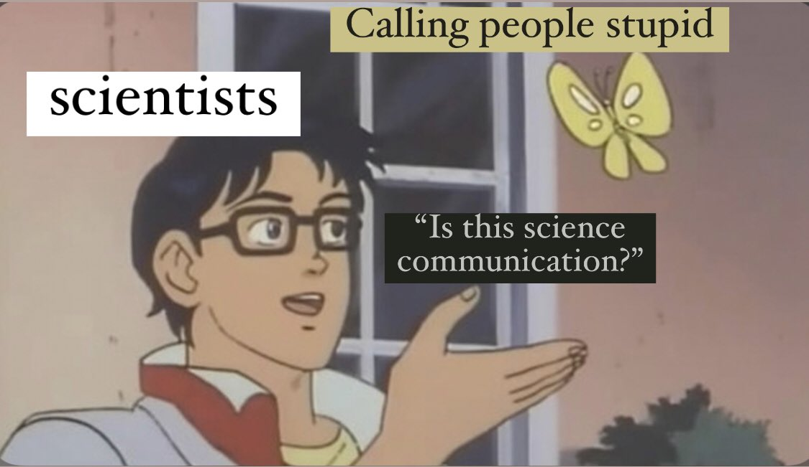
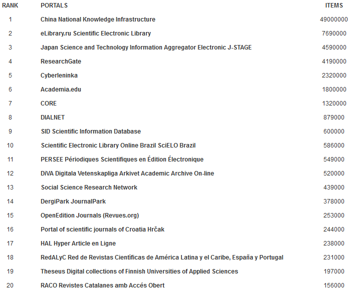

"Linux Mint is the worst operative system
...except for all those other operative systems that have been tried from time to time" 😃
Replying to @dontusethiscode, @numpy_team and @pandas_dev
What are your favourite educational materials for numpy and pandas? (No need for them to be free)
Replying to @pradyunsg
I bet it's the same person https://twitter.com/codewithanthony/status/1416064544129028098
Replying to @reydelhumo and @agustin_cataldi
Y va a peor, en vez de a mejor 😓
I have an idea: if and only if a different team on a different continent reproduces your paper, it's Science. Before that, it's a glorified blog post (with premium access if it's published in a journal).
Good morning! #phdchat
RT @simonw: TIL about the codespell Python package for checking spelling:
codespell docs/*.rst --ignore-words docs/ignore.txt
Found a…
Replying to @choldgraf
I've been using https://launchpad.net/~git-core/+archive/ubuntu/ppa for years, no complaints. Installing git with conda-forge looks excessive to me...
RT @heycurlytop: I said it

RT @brettsky: New blog post covering how to deal with various ways you can botch a release on PyPI (covering the whole release being bad, t…
Replying to @ocefpaf, @ralfgommers and @choldgraf
"All you need to learn" is `conda install`, then `-c conda-forge`, then `mamba`, then `--revisions 0` when something breaks...
From my experience teaching conda to beginners, this sounds overly optimistic. I am very wary of touching the base environment, too many crazy errors.
Replying to @jeremyphoward and @157239n
There are some tradeoffs though. For example, NumPy-style docstrings have other sections, like Examples, References, and so forth. AFAIU docments syntax cannot be easily extended to support those, so users that want them would need to write a full napoleon-compliant docstring.
Replying to @jeremyphoward and @157239n
In any case, docments looks like a great solution for simple docstrings, and being able to not repeat parameter names and types is awesome. I would love to have the best of both worlds :)
RT @sdelquin: Seguimos a tope con #Twitch. Próxima semana tenemos a una super invitada! Estaremos #alegando con @yodralopez 👩🏻💻 y estoy se…
RT @gvwilson: It's been pointed out that the papers currently on the to-do list for https://neverworkintheory.org/ are skewed toward data mining -…
Replying to @codewithanthony and @pradyunsg
Plot twist: they make homophobic jokes🤦🏼♂️
RT @emollick: The Open Syllabus compiles assigned readings from 7.2 million syllabi, listed by subject (plus check out the map of all readi…
"climate anxiety" yahoo answers
Replying to @StefanKarpinski
If the primary user base is not professional programmers, along with R, MATLAB, SAS, VB and such... does Julia still count as a "general purpose language"?
RT @sktime_toolbox: Next week! Community members and new joiners of all experience levels are welcome to the doc #sprint. Contribute to a g…
Replying to @arclight
🙄
RT @readthedocs: We have a new colleague, our #sphinxdoc tutorial is public, Python 3.10 beta in our images, and more: read the latest edit…
Replying to @jonesusHchrist and @SolBrah
I have been using Matrix for 4+ years for all my open source projects, I love that it exists, and they keep making great progress. However, saying that Matrix is easier than Telegram is blatant lies, and you know it. They have lots of UX issues, E2EE is basically a nightmare, +
Replying to @jonesusHchrist and @SolBrah
the apps are still very rough (especially the Android one, since they migrated a while ago and it's not feature complete), and I could go on.
I have *never* lost history data with Telegram, it's there since I started using it. It's seamless to use, it's very polished. +
Replying to @jonesusHchrist and @SolBrah
Sure, it's not E2EE by default. But at least it doesn't make false promises like WhatsApp, which stores " " "encrypted" " " chats in... the Google cloud. Signal is good, but desktop apps are still a joke.
You can make your point without spreading FUD.
Still gives me chills every time I listen to it ♥️ https://twitter.com/juanluisback/status/1402910873165963267
RT @brettsky: If you have a package on PyPI that doesn't have a wheel that will install on Python 3.10 for your latest release, please cons…
RT @quansightai: A security issue has been identified with #JupyterLab and #Jupyter Notebook. Make sure you are running the recommended ver…
Replying to @simonw and @readthedocs
Thanks a lot for the writeup! I was in the middle of studying autodoc for the new Sphinx tutorial https://github.com/sphinx-doc/sphinx/pull/9534 will draw some inspiration from your post :)
Replying to @gvwilson
Why?
RT @choldgraf: long term, we'll all be better off if there is a healthy competitive marketplace of vendors, with technology that is not sol…
Replying to @westurner, @readthedocs, @ericholscher, @caption_pop and @transifex
It is indeed available, but notice the .html at the end of the URL https://docs.python-requests.org/es/latest/user/quickstart.html
Looks like the configuration of the projects is not uniform. Would you open an issue on the requests tracker? Feel free to ping me, happy to help!
Replying to @westurner, @readthedocs, @ericholscher, @caption_pop and @transifex
Also, can you clarify what do you mean about Caption, Weblate, and Transifex?
Replying to @westurner, @readthedocs, @ericholscher, @caption_pop and @transifex
Unfortunately, the last commit to https://github.com/requests/requests-docs-es was 5 years ago :(
Replying to @westurner, @readthedocs, @ericholscher, @caption_pop, @transifex, @captionpop, @choldgraf, @en and @es
Better integration with translation services like @WeblateOrg would definitely be a plus. We struggle with this ourselves https://github.com/readthedocs/readthedocs.org/issues/4462
Putting that info in the markup itself is a totally different workflow though. @reydelhumo surely has thoughts on this as well
RT @pyodide: Pyodide 0.18.0 is now available.
This releases includes Python 3.9.5, experim…
Replying to @nicholdav and @vboykis
"oops"
ipdb> p Sun in _FRAME_MAPPING
False
ipdb> p Sun in list(_FRAME_MAPPING.keys())
True
😳
Replying to @juanluisback
This is the biggest WTF moment I've ever had with Python, ever
Replying to @gise_rossi
Ingeniero aeronáutico convertido en developer advocate sirve? 😅
Replying to @rdbisme
Yep!
Replying to @gise_rossi
Voy! ^^
RT @arxiv: The precursor to arXiv was a preprint exchange email list started and curated by Joanne Cohn, who is now a UC Berkeley cosmologi…
This is honestly the first time I feel excitement about a Linux distribution. Been a proud user and sponsor of @Linux_Mint for years, but the @elementary folks are doing impressive design and usability work, and they have good marketing. Congratulations for the release! https://twitter.com/elementary/status/1425124987841781760
Any news from @SciPyIndia , @ScipyJapan or @EuroSciPy in the second half of the year? 😋
Does @JOSS_TheOJ have an API where I can get a listing of paginated papers, and details about source repositories and such?
I have just discovered https://mkdocstrings.github.io/ by @pawamoy, @oprypin and others, which allows writing Python docstrings in Markdown, among other things. What do you think? Is this the future of Python docstrings, or will you stay with reStructuredText?
Replying to @fperez_org and @rdbisme
Not weird hashing behavior to my knowledge - it's a namedtuple with __slots__ and a custom __new__ https://github.com/poliastro/poliastro/blob/6b9e5a2ef5233e10ce557257f7d369159a82338f/src/poliastro/bodies.py#L40-L90
RT @PamphileRoy: I presented SciPy's new QMC submodule at MCM2021 yesterday. Looking forward for further collaborations on SciPy with the c…
RT @isidroaguillo: UPDATED: Ranking of OA Portals of Journals according to Google Scholar
https://repositories.webometrics.info/en/portals

RT @gvwilson: Two papers on Python language features and their usage https://neverworkintheory.org/2021/08/17/python-language-features.html Uptake of (backward-incompatible) Python 3 was…
Replying to @DegenerateConic, @pawamoy and @oprypin
I think it requires @MkDocsProject https://mkdocstrings.github.io/#quick-usage
Replying to @westurner, @readthedocs and @ericholscher
Would love to pick your brain one of these days to discuss Linked Data and scientific citations in Sphinx and Read the Docs, may I send you an email? :)
RT @rabernat: Such a useful post! In the end, to refactor and accelerate a legacy toolkit with custom data structures / algorithms, they re…
Replying to @giffmana
What is the original Schmidthuber post? :D
From @github support today: "Seemingly the domain http://hey.com is not supported by our systems."
Dear @heyhey, is this a known issue? Seems really unfortunate.
"Based on random effects models, reading from screens had a negative effect on reading performance relative to paper" 🤯 https://twitter.com/EllisTangents/status/1427773732563701763
Thinking *a lot* these days about this article by @jacobian, "Embrace the grind" https://jacobian.org/2021/apr/7/embrace-the-grind/
"People said I did the impossible, but that’s wrong: I merely did something so boring that nobody else had been willing to do it."
Replying to @choldgraf
Old open source issues never die @herraiz 😋
Replying to @thedatawarlock_, @dipuavila, @IncendiosES, @El_Batefuegos and @InfuesAvila
Heno, paja, agua... 💔 https://twitter.com/larrymeath/status/1353120935134564359
Replying to @alyxw, @liberachat and @Twitch
Yeah, the number of users is also more or less the same ;)
Replying to @westurner, @readthedocs and @ericholscher
Wow, a million thanks for the links! That's a lot to digest - to make the meeting more productive, let me go over all this first and we can schedule something for September, how does that sound?
Replying to @fmisle
Apparently I'll have to, yes https://twitter.com/heyhey/status/1385651800448147458
RT @mrocklin: With the rise in tech valuations and budgets, engineering departments would be wise to build a culture of training and leveli…
Replying to @patrickmineault
normal venv
RT @amuellerml: A huge step for scikit-learn (that might seem small) got merge today: https://github.com/scikit-learn/scikit-learn/pull/18010 by @thomasjpfan This warns (a…
Replying to @Divya_M_P
I think we will survive, but we are gearing towards a miserable world, with pollution and scarcity of basic goods. My only coping strategies are to do what's within my immediate reach and read the stoics @dailystoic
It doesn't always help, but I'm tired of feeling full of dread
Replying to @juanluisback
I refined some scripts by @jimjonquinn and it's working! https://github.com/astrojuanlu/joss-scraper
Working on some data project related to documentation in scientific software, hope to share some results in some weeks 🤓
RT @MrAhmednurAli: Misinformation is never behind a paywall.
Replying to @LadybugPodcast
Yesterday I was deciding which OAuth2 library to use for a project. 2 of them had very bad documentation, with lots of jargon. 1 of them had an example of exactly what I needed. I chose the latter :)
I have never used Tableau but this is probably right. We coders struggle with the idea that point-and-click software *does* have value. Yes, Turing-complete programming languages are infinitely cool and powerful. But 90 % of use cases can be covered with 3 clicks in 1 minute. https://twitter.com/HamelHusain/status/1429908959851286528
RT @LadybugPodcast: It’s easy to overlook documentation when building an app but it can make or break a user’s experience. Today we discuss…
RT @story645: @juanluisback I used to very much 🙄 at tableau but then I started teaching pivot tables a lot & oh tableau makes it dead simp…
Replying to @story645
Same happened to me in my early engineering days. I used to scoff at MATLAB and Simulink, and thought that everybody ought to learn programming. This was probably conditioned by the fact that there were not many good open-source graphical tools. This worldview is too narrow.
Trying to understand documentation best practices in R packages. Reference docs are .Rd files in man/, usually generated by roxygen2. Guides and tutorials are "vignettes" written in .Rmd. Some packages use pkgdown to create websites that also may contain docs.
Missing anything?
Replying to @juanluisback
(By the way, the "R Packages" book https://r-pkgs.org/ is so good!)
Replying to @juanluisback
And I have discovered other options, like @rOpenSci (which also hosts docs), Sweave, and RDocumentation.
RT @adriengnt: SciPy performances improvement thanks to Pythran, the summary of a GSoC: http://serge-sans-paille.github.io/pythran-stories/gsoc21-improve-performance-through-the-use-of-pythran.html
Very nice to see Pythran g…
Replying to @iamslavina and @OriolAbril
You might want to check out https://myst-parser.readthedocs.io/, which is all the cool things about reStructuredText plus the Markdown familiarity :)
Replying to @OriolAbril and @iamslavina
The @writethedocs community is awesome 💟 and quite active!
RT @x2plusy2: @GabrielG439 Truth. Python 3 was released on Dec 3, 2008. Because Python 2 is bundled with CentOS 7, which is supported until…
Replying to @dontusethiscode and @matplotlib
What are in your opinion the most useful post-0.98 matplotlib APIs that people are not using?
Excited to see this come true at last! https://twitter.com/readthedocs/status/1430556858570338312
Los bares abiertos de par en par, y mi barrio hace más de un año sin biblioteca. https://twitter.com/LibrosCMadrid/status/1278951351255523328
Replying to @MakespaceMadrid and @DeutscheBankES
Ir en persona a dar la brasa si es que aún tenéis ganas de manteneros en @DeutscheBankES. Pero vamos, que yo a estas alturas ya me cambiaría de banco sí o sí.
Replying to @hynek
mkdocstrings already has inventories, and they will be released very soon https://github.com/mkdocstrings/mkdocstrings/pull/310
I am very invested on Sphinx and MyST at the moment. But we can't ignore that good visual defaults and "perceived simplicity" are important for Developer Experience.
Replying to @hynek
In other words: yes, *today*, MkDocs + mkdocstrings are objectively inferior to Sphinx. Yes, *today* one can write beautiful Markdown with all the power of reST.
But all these are temporary technical issues, and things are changing fast.
Replying to @MakespaceMadrid and @DeutscheBankES
Siento muchísimo que estéis así. No hay derecho a este "ghosting". O sea: si tienen algún problema con vosotros, que lo digan y punto.
Os deseo mucho ánimo y suerte encontrando un banco nuevo. @fiareBE
Replying to @hynek
In the Sphinx inner circle there's too much sentimental attachment towards reStructuredText. Some people don't seem to acknowledge that docutils is an excellent project, while reST has lost the markup language battle.
docutils living in SourceForge doesn't help.
Replying to @hynek
Your tweet appeared after a "sphinx mkdocs" search on this site. Not trying to "win" anything, just adding some new information on things that have happened in the past months.
RT @KyleCranmer: I just got a graphing calculator for my son and it has…. Python!
RT @gmarkall: Want to find out who the users of your open source project really are? Easy! Simply create a broken release, and they’ll make…
RT @PyLatam: ¡Hola a todos!
El correo con los accesos a la plataforma de straming de #PyConLatam21 ya fue enviado. Revisen sus correos inc…
Replying to @itsdeannat
I think boils down to good wording. If you write a heading saying "Assumptions:" and then a bullet list, that might feel a bit aggressive IMO. I try to explain who can benefit from the tutorial and leaving the door open for more.
Replying to @rabernat, @ZENODO_ORG and @github
For real? 😓
Replying to @PyLatam
Recibí el correo de Hubilo, ¿debería tener otro?
¡Nos vemos en unos minutos en la #PyConLatam21 hablando de Sphinx, documentación, Markdown, y @readthedocs!
https://www.pylatam.org/horario-completo/talk3/
Replying to @juanluisback
Les dejo el repositorio con el material de la charla en mi GitHub:
https://github.com/astrojuanlu/charla-sphinx/
¡Gracias de nuevo @PyLatam!
Replying to @itsdeannat
For reference, this is my most recent creation: the Sphinx tutorial https://www.sphinx-doc.org/en/master/tutorial/index.html
RT @asclnet: "The source code is available on request"
Even if that's true now, will it be true in five years? In ten?
#OpenScience
Replying to @mutanthumb and @asclnet
GitHub is surely more reliable than a random researcher hard drive. Also: https://archiveprogram.github.com/
Replying to @asclnet and @mutanthumb
Yep, that's my understanding too. In any case, I wasn't claiming that GitHub is equivalent to @internetarchive , or that they are a selfless entity without risk of disappearing in the future. My point was that, if it's online *even on GitHub*, it's already better than nothing.
RT @asclnet: @juanluisback @mutanthumb @SWHeritage has copied every GitHub repo; you can get to this, and ASCL can point to it (and does if…
Replying to @asclnet, @mutanthumb and @SWHeritage
This is super useful for some research I'm conducting *right now* :D thanks a lot!
Replying to @sizeof
So much for the makers of "the best laptop for Linux"...
Love everything about this newsletter! Lots of inspiring work ♥️ https://twitter.com/rOpenSci/status/1432607919850369024
RT @gvwilson: If you (or your students) would like to help #neverworkintheory, you can submit brief reviews of research papers that you thi…
RT @dhh: "Apple and Google set fire to their relationship with developers to forestall the inevitable. I hope they don't let it burn to the…
My aerospace heart is so happy to see @esa release open source software, openly reviewed on @JOSS_TheOJ , and with its documentation hosted on @readthedocs ♥️ https://twitter.com/JOSS_TheOJ/status/1432743211810934786